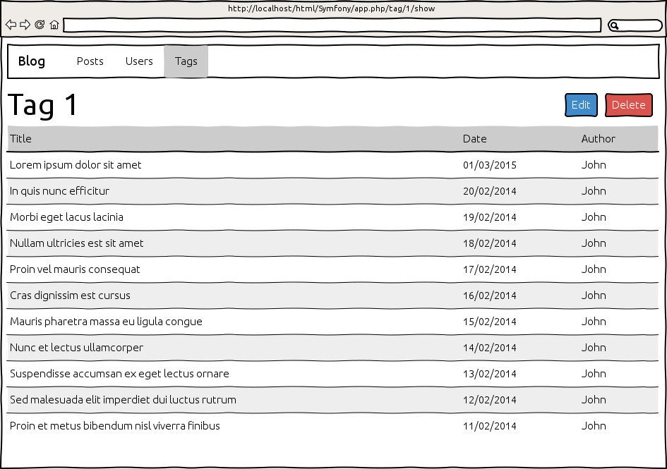
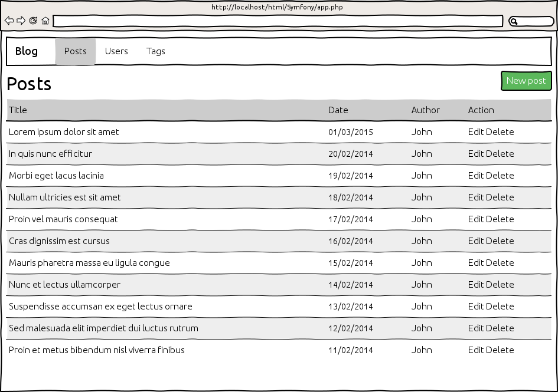

TP¶
Le blog que nous allons créer est très simple. En voici les grandes lignes :
- Nous aurons des posts auxquels nous attacherons des tags.
- Nous pourrons lire, écrire, éditer et rechercher des posts.
- Nous pourrons créer, modifier et supprimer des tags.
- Nous pourrons également commenter les posts.
- Nous n’aurons pas de système de gestion des utilisateurs : nous devrons choisir l’utilisateur lorsque nous rédigerons un post ou un commentaire.
Créez le bundle EpsiBlogBundle (chapitre Création d’un bundle) avec la commande
php app/console generate:bundleCréez les entités suivantes avec la commande
php app/console doctrine:generate:entityEntité
UserNom Type de champ Taille du champ Validation username string 30 requis, unique email string 100 requis, unique password string 100 requis Entité
PostNom Type de champ Taille du champ Validation title string 255 requis date datetime requis body text requis La suppression d’un post entraîne la suppression des commentaire qui lui sont associés.
Entité
TagNom Type de champ Taille du champ Validation name string 30 requis Entité
CommentNom Type de champ Taille du champ Validation date datetime requis comment text requis
Ajoutez les relations entre les entités en modifiant les classes Entity générées précédemment
Entité
UserNom Entité cible Cardinalité Validation posts Post0..n comments Comment0..n Entité
PostNom Type de champ Taille du champ Validation author User1 requis comments Comment0..n tags Tag0..n La suppression d’un post entraîne la suppression des commentaires qui lui sont associés.
Entité
TagNom Type de champ Taille du champ Validation posts Post0..n Entité
CommentNom Type de champ Taille du champ Validation author User1 requis post Post1 requis
Générez les méthodes
getetsetmanquantes dans vos entités en exécutant la commandephp app/console doctrine:generate:entities EpsiBlogBundleCréez le schéma dans votre base de données en exécutant la commande
php app/console doctrine:schema:update --dump-sql --forceCréez les interfaces pour gérer chacune des entités avec la commande
php app/console generate:doctrine:crudPour avoir le l’aide sur comment utiliser cette commande :
php app/console help generate:doctrine:crudLorsque l’exécuter, elle va vous demander si vous souhaitez créer les actions d’écriture (
new,updateetdelete). Répondezyes.Elle vous demandera également le format de la configuration de vos routes (
yml,xml,php, ouannotation). Répondezannotation.Mettez en place le triple héritage de template (chapitres Les vues avec Twig)

- en rouge : le template de l’application
app/Resources/views/base.html.twig - en bleu : le template du bundle
src/Epsi/Bundle/BlogBundle/Resources/views/base.html.twig - en vert : le template de la page
- en rouge : le template de l’application
Ajouter jQuery et Bootstrap (chapitres Les assets)
Ajoutez un menu en haut de la page vers les listes les entités post, user et tag (chapitres Les vues avec Twig)
Mettez en place les interfaces telles que ci-dessous
Les tags
Supprimez les champs non nécessaire dans le formulaire
Ajouter la validation sur le champ du formulaire
Mettez en forme le formulaire

Mettez en forme la liste des tags

Cette page affiche la liste des tags ordonnés par nom avec le nombre de posts associés.
Mettez en forme la page d’affichage d’un tag
La page affiche la liste des posts associés au tag.
Les utilisateurs
Supprimez les champs non nécessaire dans le formulaire
Ajouter la validation sur le champ du formulaire
Mettez en forme le formulaire

Mettez en forme la liste des utilisateurs

Cette page affiche la liste des utilisateurs ordonnés par nom avec le nombre de posts qu’ils ont écrit.
Mettez en forme la page d’affichage d’un utilisateur

La page affiche la liste des posts écrit par l’utilisateur.
Les posts
Supprimez les champs non nécessaire dans le formulaire
Ajouter la validation sur le champ du formulaire
Mettez en forme le formulaire

Mettez en forme la liste des posts
Cette page affiche la liste des posts ordonnés par date, du plus ancien au plus récent.
Mettez en forme la page d’affichage d’un post
Ajouter le formulaire ajout de commentaires grâce à une inclusion de contrôleur

A rendre¶
une archive avec vos développements Symfony + un dump de votre base de données
cd /var/www/symfony/ mysqldump -usymfony -p symfony > symfony.sql tar -cf symfony.tar app/config/ app/Resources/ src/Epsi/ composer.* symfony.sqlpar mail à l’adresse madeline@veyrenc.fr
le 01/11/2015 dernier délais